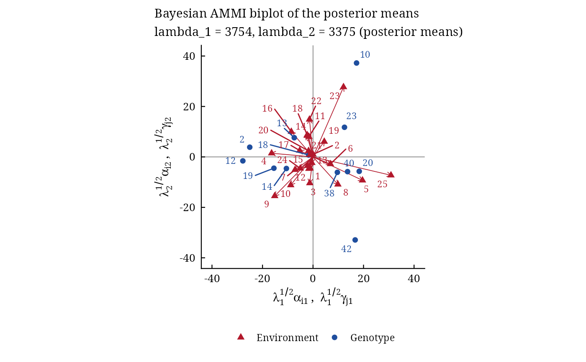

Bayesian estimation of linear-bilinear models: AMMI and SREG (GGE)
Source:R/bayes_ammi.R
bayes_ammi.Rdbayes_ammi() estimates the linear-bilinear models of a multi-environment trial by the general Bayesian method
of Perez-Elizalde et al. (2012): the additive main effects and multiplicative interaction (AMMI) model and the
sites regression (SREG, GGE) model. The data of an earlier trial with the same genotypes and environments can be
the prior (.prior_data): its cell means, effects and singular value decomposition give conjugate priors whose
weight is its number of replicates, as in the paper's analysis of two years of a maize trial. Without an earlier
trial the priors are vague but proper. The sampler is compiled (C++); every parameter has a posterior distribution,
and bayes_ammi_biplot() draws the biplot with highest posterior density (HPD) regions.
Usage
bayes_ammi(
.data,
.y,
.gen,
.env,
.rep,
.nIter = 1000L,
.prior_data = NULL,
.n0 = NULL,
.model = c("AMMI", "SREG", "GGE"),
.k = NULL,
.burnin = 0L,
.thin = 1L,
.chains = 1L,
.priors = bys_priors(),
.level = 0.95,
.seed = NULL,
.align = TRUE,
.waic = TRUE
)
# Default S3 method
bayes_ammi(
.data,
.y,
.gen,
.env,
.rep,
.nIter = 1000L,
.prior_data = NULL,
.n0 = NULL,
.model = c("AMMI", "SREG", "GGE"),
.k = NULL,
.burnin = 0L,
.thin = 1L,
.chains = 1L,
.priors = bys_priors(),
.level = 0.95,
.seed = NULL,
.align = TRUE,
.waic = TRUE
)Arguments
- .data
a data frame with one row per plot.
- .y, .gen, .env, .rep
the columns of the response, genotypes, environments and replicates: bare names or strings. The same names are used in
.prior_data.- .nIter
number of iterations kept per chain before thinning (after the burn-in).
- .prior_data
NULL(default: vague priors) or a data frame of an earlier trial with the same columns, genotypes and environments, used as prior (Perez-Elizalde et al. 2012).- .n0
weight of the earlier trial: the number of its observations per cell in the prior (default its number of replicates).
- .model
"AMMI"(default) or"SREG"(sites regression, GGE;"GGE"is accepted).- .k
number of bilinear terms \(K\) (default
NULL: all of them).- .burnin
number of iterations discarded at the start of every chain (default 0).
- .thin
keep every
.thin-th iteration (default 1).- .chains
number of chains (default 1).
- .priors
the vague priors used without an earlier trial, from
bys_priors().- .level
probability of the HPD intervals (default 0.95).
- .seed
integer seed for a reproducible run, or
NULL; the random number state of the session is restored afterwards.- .align
keep the sign of every bilinear term (default
TRUE).- .waic
compute WAIC during sampling (default
TRUE).
Value
An object of class c("bys_bayes_ammi", "bys_result", "list"); the components of version 0.2.0
come first, the draws of all chains one after the other:
mu1data.table, columnmu: draws of the overall mean.tau1data.table, columntau: draws of the error variance \(\sigma^2\).tao1data.table, columnstao1, ...,taoG: draws of the genotype effects (no columns for SREG).delta1data.table, columnsdelta1, ...,deltaE: draws of the environment effects.lambdas1data.table, columnslambdas1, ...: draws of the singular values.alphas1,gammas1data.tables, one row per draw, columnsalphas1, ...,alphas<GK>(genotype scores, genotypes within terms) andgammas1, ... (environment scores).Mean_Alphas,Mean_Gammasdata.tables, columnsV1, ...,VK: posterior means of the score matrices.summarydata.table: posterior mean, standard deviation, Monte Carlo standard error, HPD interval, effective sample size and potential scale reduction factor of every parameter.scoresdata.table: posterior means of the biplot coordinates.drawscoda::mcmc.listof all parameters.diagnosticsGelman-Rubin, Raftery-Lewis and Heidelberger-Welch diagnostics.
lsleast-squares fit of the trial;
prior: the fit of the earlier trial used as prior.fitDIC and WAIC.
settingsiterations, burn-in, thinning, chains, terms, model, priors, level, seed, time used.
Methods: print(), summary(), plot(), bayes_ammi_biplot(),
bys_interpret(), bys_compare(), bys_cite().
Details
Models. For genotype \(i\), replicate \(l\) and environment \(j\),
$$\textrm{AMMI: } y_{ijl} = \mu + \tau_i + \delta_j + \sum_{k=1}^{K} \lambda_k \alpha_{ik} \gamma_{jk} +
e_{ijl}, \qquad \textrm{SREG: } y_{ijl} = \mu + \delta_j + \sum_{k=1}^{K} \lambda_k \alpha_{ik} \gamma_{jk} +
e_{ijl},$$
\(e_{ijl} \sim N(0, \sigma^2)\), with \(\sum_i\tau_i = \sum_j\delta_j = 0\), \(\lambda_1 \ge \cdots \ge \lambda_K > 0\), and orthonormal
score matrices \(\mathbf{U} = (\boldsymbol{\alpha}_k)\) and \(\mathbf{V} =
(\boldsymbol{\gamma}_k)\), \(\mathbf{U}^\top\mathbf{1} = \mathbf{0}\), and for AMMI also
\(\mathbf{V}^\top\mathbf{1} = \mathbf{0}\) (paper, eq. 1.2-1.3). By default all
\(\min(G, E) - 1\) terms are fitted (\(\min(G - 1, E)\) for SREG), as in the
paper and the earlier versions; .k fits fewer.
An earlier trial as prior (.prior_data). With \(n_0\) its number of replicates
(.n0), \(\mathbf{Y}_0\) its table of cell means and \(\mu_0\),
\(\boldsymbol{\tau}_0\), \(\boldsymbol{\delta}_0\), \(\mathbf{U}_0\mathbf{D}_0
\mathbf{V}_0^\top\) its least-squares fit (paper, Section 2.2):
$$\mu \sim N\left(\mu_0, \frac{\sigma^2}{n_0 GE}\right), \quad \mathbf{K}_G\boldsymbol{\tau} \sim
N\left(\mathbf{K}_G\boldsymbol{\tau}_0, \frac{\sigma^2}{n_0 E}\mathbf{I}\right), \quad
\mathbf{K}_E\boldsymbol{\delta} \sim N\left(\mathbf{K}_E\boldsymbol{\delta}_0, \frac{\sigma^2}{n_0
G}\mathbf{I}\right),$$
\(\lambda_k \sim N(\lambda_{0k}, \sigma^2/n_0)\) truncated to the order
(eq. 2.9), von Mises-Fisher priors \(p(\mathbf{U}) \propto \mathrm{etr}(n_0\mathbf{Y}_0\mathbf{V}_0
\mathbf{D}_0\mathbf{U}^\top/\sigma^2)\) and \(p(\mathbf{V}) \propto
\mathrm{etr}(n_0\mathbf{Y}_0^\top\mathbf{U}_0\mathbf{D}_0\mathbf{V}^\top/\sigma^2)\) (eq. 2.7-2.8), and \(a S^2_0/\sigma^2 \sim \chi^2_a\) with \(a = n_0 -
1\) and \(S^2_0\) the within-cell mean square of the earlier trial (eq. 2.11; the values of the
earlier versions of the package).
Conditional distributions (paper, Section 2.3). With \(\mathbf{Y}\) the cell means of the trial,
\(B\) its replicates and \(n = BGE\), the linear effects are normal with means
\((n\bar{y} + n_0GE\mu_0)/(n + n_0GE)\) and so on; the singular values are
truncated normal with mean \((B\,\boldsymbol{\alpha}_k^\top\mathbf{Y}\boldsymbol{\gamma}_k +
n_0\lambda_{0k})/(B + n_0)\) and variance \(\sigma^2/(B +
n_0)\) (eq. 2.15); the score matrices are von Mises-Fisher (eq. 2.13-2.14), drawn one column at a
time on the sphere orthogonal to \(\mathbf{1}\) and the other columns (Hoff 2009) with parameters
\((B\lambda_k\mathbf{Y}\boldsymbol{\gamma}_k + n_0\lambda_{0k}\mathbf{Y}_0\boldsymbol{\gamma}_{0k})/\sigma^2\) and the same for \(\mathbf{V}\); and
$$\sigma^2 \sim \frac{aS^2_0 + \mathrm{SSW} + B\sum_{ij}(\bar{y}_{ij} - \hat{y}_{ij})^2}{\chi^2_{a +
n}}.$$
As in the paper, the dependence of the priors on \(\sigma^2\) is left out of its conditional
distribution (it would involve the normalising constants of the von Mises-Fisher priors). Without an earlier trial
the priors of bys_priors() apply, which do not depend on \(\sigma^2\), and all
conditionals are exact (Crossa et al. 2011).
Starting values and signs. With an earlier trial the first chain starts at its least-squares fit and every
draw keeps the orientation of its score vectors (.align); otherwise the first chain starts at the
least-squares fit of the trial. Other chains start at dispersed values. With all terms fitted and a prior trial that
disagrees with the data, the posterior of the scores can have several modes; compare chains (.chains) and
the potential scale reduction factors.
Unbalanced trials. Missing plots and cells are completed by data augmentation (see
bys_priors); an earlier trial with empty cells is completed by the EM algorithm before its fit.
Changes from version 0.2.0. The function no longer reads the earlier trial from objects in the workspace
(n0, mu0, tau0, ...; it stopped with "object 'n0' not found" without them): the earlier trial is
the argument .prior_data. The singular values were computed once and never sampled; tau1 held a
precision drawn from a residual matrix that was never updated; the scores were drawn without their constraints
and orthogonalised afterwards; the columns of delta1 were named for the genotypes. tau1 now holds
the draws of the error variance \(\sigma^2\).
References
Perez-Elizalde, S., Jarquin, D. and Crossa, J. (2012). A general Bayesian estimation method of linear-bilinear models applied to plant breeding trials with genotype x environment interaction. Journal of Agricultural, Biological, and Environmental Statistics, 17(1), 15–37. doi:10.1007/s13253-011-0063-9
Crossa, J., Perez-Elizalde, S., Jarquin, D., Cotes, J. M., Viele, K., Liu, G. and Cornelius, P. L. (2011). Bayesian estimation of the additive main effects and multiplicative interaction model. Crop Science, 51(4), 1458–1469. doi:10.2135/cropsci2010.06.0343
Hoff, P. D. (2009). Simulation of the matrix Bingham-von Mises-Fisher distribution, with applications to multivariate and relational data. Journal of Computational and Graphical Statistics, 18(2), 438–456. doi:10.1198/jcgs.2009.07177
Wood, A. T. A. (1994). Simulation of the von Mises Fisher distribution. Communications in Statistics - Simulation and Computation, 23(1), 157–164.
Author
Muhammad Yaseen (myaseen208@gmail.com), Diego Jarquin (diego.jarquin@gmail.com), Sergio Perez-Elizalde (sergiop@colpos.mx), Juan Burgueno, Jose Crossa (j.crossa@cgiar.org)
Examples
data(cultivo2008)
data(cultivo2009)
fm3 <-
bayes_ammi(
.data = cultivo2009
, .y = y
, .gen = entry
, .env = site
, .rep = rep
, .nIter = 300
, .prior_data = cultivo2008
, .n0 = NULL
, .model = "AMMI"
, .k = NULL
, .burnin = 100
, .thin = 1
, .chains = 1
, .priors = bys_priors(
mu_mean = 0
, mu_var = 1e+8
, tau_mean = 0
, tau_var = 1e+8
, delta_mean = 0
, delta_var = 1e+8
, lambda_mean = 0
, lambda_var = 1e+8
, nu = 1
, s2 = NULL
)
, .level = 0.95
, .seed = 1
, .align = TRUE
, .waic = TRUE
)
fm3
#> Bayesian AMMI with 11 multiplicative term(s), an earlier trial as prior (n0 = 3): 12 genotypes, 25 environments, 3 replicates
#> 1 chain(s) x 300 kept draws (iterations 300 after a burn-in of 100, thinning 1); 1.6 s
#>
#> Posterior means, standard deviations and 95% HPD intervals
#> parameter mean sd lower upper ess
#> <char> <num> <num> <num> <num> <num>
#> 1: mu 3.848e+03 30.31 3785.35 3898.7 300
#> 2: sigma2 1.709e+06 98008.70 1507454.71 1887695.7 240
#> 3: tau[2] 1.288e+02 105.68 -69.55 320.9 300
#> 4: tau[10] 3.195e+02 102.39 117.70 505.4 300
#> 5: tau[12] -6.843e+01 104.97 -251.53 143.1 563
#> 6: tau[13] 3.968e-01 102.52 -184.56 212.2 300
#> 7: tau[14] 9.716e+01 105.12 -81.66 306.0 300
#> 8: tau[18] 1.793e+02 108.10 -50.52 374.8 300
#> 9: tau[19] 4.970e+02 102.99 296.98 663.8 381
#> 10: tau[20] 7.050e+01 101.30 -115.91 239.7 300
#> 11: tau[23] 1.284e+02 97.41 -65.15 307.9 300
#> 12: tau[38] -4.812e+02 103.97 -699.04 -288.4 300
#> 13: tau[40] -2.643e+02 109.78 -467.12 -56.5 392
#> 14: tau[42] -6.070e+02 101.99 -800.04 -404.7 300
#> 15: delta[1] 1.309e+02 146.31 -123.16 439.7 250
#> 16: delta[2] -5.254e+02 144.67 -776.11 -233.1 400
#> 17: delta[3] 8.541e+02 148.98 571.59 1114.2 300
#> 18: delta[4] -3.913e+02 140.55 -670.78 -144.7 250
#> 19: delta[5] 1.540e+03 143.41 1257.76 1771.4 300
#> 20: delta[6] -9.564e+01 156.23 -407.50 219.6 372
#> 21: delta[7] -1.751e+03 146.71 -2033.14 -1468.3 300
#> 22: delta[8] 3.568e+02 153.06 93.24 675.0 300
#> 23: delta[9] -1.466e+03 154.84 -1809.15 -1199.0 292
#> 24: delta[10] -7.575e+02 141.39 -1003.34 -486.4 300
#> 25: delta[11] -1.209e+03 147.91 -1523.32 -953.9 300
#> 26: delta[12] -1.903e+03 150.11 -2174.76 -1603.7 300
#> 27: delta[13] -9.589e+02 156.45 -1234.85 -628.5 300
#> 28: delta[14] -5.373e+02 146.12 -833.57 -272.6 300
#> 29: delta[15] -2.211e+03 149.14 -2499.75 -1949.7 776
#> 30: delta[16] 8.331e+01 149.78 -232.20 328.0 300
#> 31: delta[17] 1.677e+02 143.15 -103.16 427.6 300
#> 32: delta[18] 1.822e+03 155.43 1523.31 2095.9 300
#> 33: delta[19] -8.719e+02 164.91 -1189.07 -552.8 300
#> 34: delta[20] -1.105e+03 144.36 -1406.58 -833.8 401
#> 35: delta[21] -1.621e+03 154.70 -1852.24 -1243.1 300
#> 36: delta[22] 4.911e+03 144.45 4648.41 5210.3 300
#> 37: delta[23] 2.874e+03 145.05 2602.35 3147.5 327
#> 38: delta[24] 9.105e+02 146.33 615.35 1163.2 300
#> 39: delta[25] 1.756e+03 145.42 1460.39 2009.6 300
#> 40: lambda[1] 3.754e+03 448.77 2955.72 4734.9 110
#> 41: lambda[2] 3.375e+03 369.41 2677.82 4079.5 89
#> 42: lambda[3] 2.931e+03 352.69 2320.94 3637.0 92
#> 43: lambda[4] 2.589e+03 303.00 2061.79 3227.1 81
#> 44: lambda[5] 2.288e+03 290.62 1791.68 2898.0 81
#> 45: lambda[6] 1.909e+03 288.47 1288.18 2392.0 97
#> 46: lambda[7] 1.523e+03 284.01 1012.58 2064.7 78
#> 47: lambda[8] 1.244e+03 290.09 698.87 1756.3 65
#> 48: lambda[9] 9.327e+02 301.23 444.64 1517.3 80
#> 49: lambda[10] 6.483e+02 285.97 180.13 1184.3 78
#> 50: lambda[11] 3.293e+02 232.97 1.10 771.8 140
#> parameter mean sd lower upper ess
#> <char> <num> <num> <num> <num> <num>
#>
#> Scores of the bilinear terms: x$summary (blocks alpha, gamma); biplot coordinates: x$scores
#>
#> Sources: Perez-Elizalde et al. (2012); Crossa et al. (2011); Hoff (2009);
#> Spiegelhalter et al. (2002); Watanabe (2010). Full references: bys_cite(x).
fm3$Mean_Alphas
#> V1 V2 V3 V4 V5 V6
#> <num> <num> <num> <num> <num> <num>
#> 1: -0.40970437 0.06529284 0.263049650 0.315331913 -0.07361952 0.48154176
#> 2: 0.28138424 0.64192114 -0.341479487 -0.002109123 0.06357048 0.27606151
#> 3: -0.45413162 -0.02730873 -0.131518150 0.052637586 0.44818064 -0.11469632
#> 4: -0.12082378 0.13087743 0.352646674 -0.037893749 0.14623249 -0.28999442
#> 5: -0.17262115 -0.07897573 -0.050419024 -0.382310285 -0.30905670 -0.05737128
#> 6: -0.02846645 0.01295616 -0.007159829 -0.275105774 -0.42422241 0.06157145
#> 7: -0.25291787 -0.07709995 -0.387167091 0.104741031 -0.18749929 -0.23109881
#> 8: 0.29896149 -0.09750453 0.359078400 0.380986283 -0.26423786 -0.07791589
#> 9: 0.20324296 0.20310626 0.210904490 -0.128570025 0.17470772 -0.24770915
#> 10: 0.15801484 -0.10499513 0.196294153 -0.303860588 0.22581451 0.13641601
#> 11: 0.22375791 -0.10072508 -0.287206121 0.373440443 -0.01219672 -0.18654194
#> 12: 0.27330380 -0.56754469 -0.177023666 -0.097287713 0.21232666 0.24973708
#> V7 V8 V9 V10 V11
#> <num> <num> <num> <num> <num>
#> 1: -0.25300862 0.05493557 0.028051878 -0.05837247 0.025134438
#> 2: 0.16721600 0.02830077 0.037043639 -0.01728128 -0.094691273
#> 3: 0.34360900 -0.04157314 -0.167915347 -0.04194817 0.144360195
#> 4: -0.05090276 -0.11315263 -0.001392044 0.05001067 -0.383155491
#> 5: 0.10488299 -0.11077256 0.208621917 -0.33316050 0.005157945
#> 6: -0.04634505 -0.08082181 -0.415881589 0.16951514 0.026616120
#> 7: -0.07859926 0.27390284 0.230504544 0.25528679 -0.023701777
#> 8: 0.41722089 0.07954546 0.055000458 0.02570131 0.083750591
#> 9: -0.28687509 0.36218618 -0.066792135 -0.12191781 0.188461743
#> 10: -0.04308153 -0.28297315 0.241677349 0.26830783 0.124524946
#> 11: -0.29839875 -0.40283864 -0.065696438 -0.12764277 0.052772478
#> 12: 0.02428217 0.23326111 -0.083222232 -0.06849876 -0.149229914
plot(x = fm3, which = "biplot")
